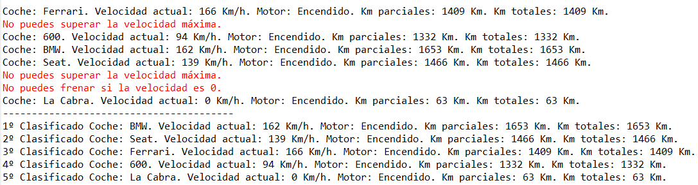
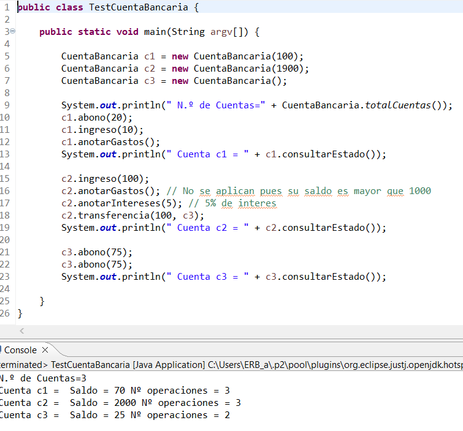
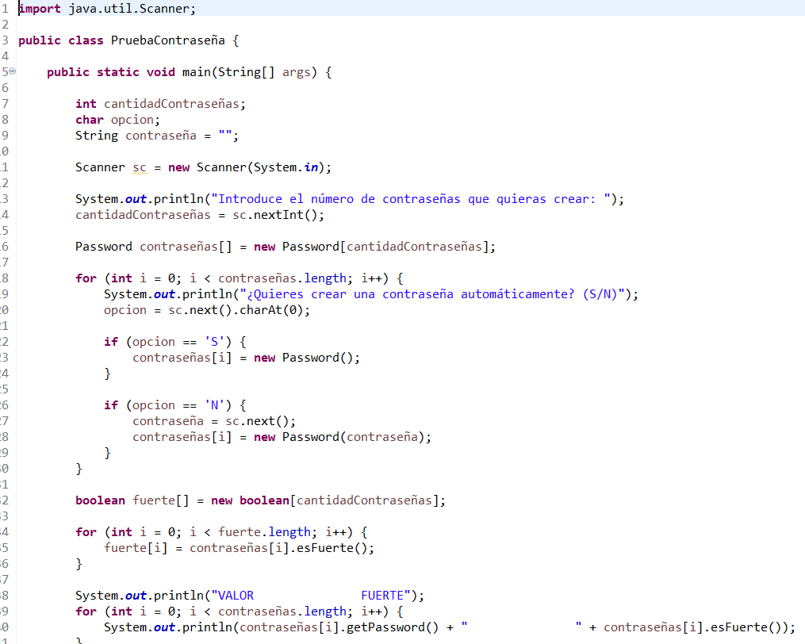
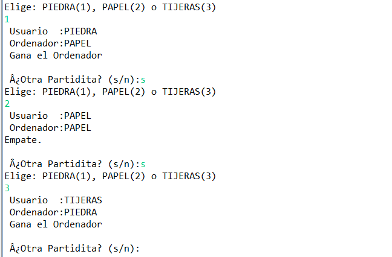

PORTFOLIO
A continuación te muestro algunos los proyectos en los que he trabajado el año pasado.
Carrera de coches
En este proyecto programamos una carrera de coches, en el que cada coche tenían los mismos atributos pero diferentes valores, como la marca, la aceleración, etc. Se crearon funciones para acelerar y frenar, y al final, se indicaba qué coche había ganado la carrera con un ranking. En este proyecto empezamos a aprender sobre la programación orientada a objetos.
Cuenta bancaria
En este proyecto programamos un banco donde podías ingresar y sacar dinero, ver el número de cuentas que se han creado, hacer transferencias entre cuentas y anotar intereses. También había un archivo para testearlo.
Contraseña
En este proyecto te generaba un número de indicado de contraseñas. Las contraseñas para que fuesen fuertes y válidas se tenía que comprobar que tuviesen ciertos cracteres, como las mayúsculas, números y carácteres especiales. Yo use el código ASCII para hacer este ejercicio.
Piedra, papel y tijeras
En este proyecto te enfrentabas a la máquina en un juego de piedra, papel o tijeras. Tenías que elegir una de las tres opciones, podías ganar, perder o empatar. El programa tenía dos contadores para saber el número de victorias que tenía el jugador y la máquina. La máquina tenía una probabilidad de siempre ganar un duelo.